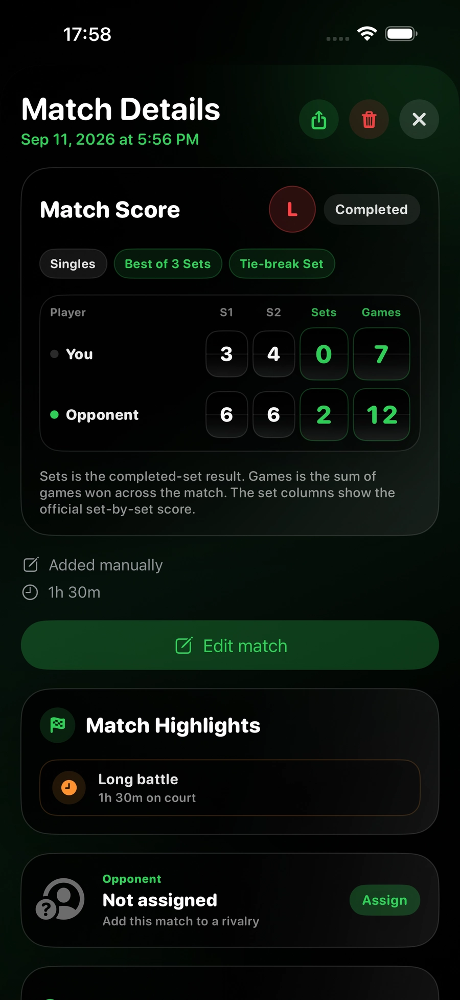
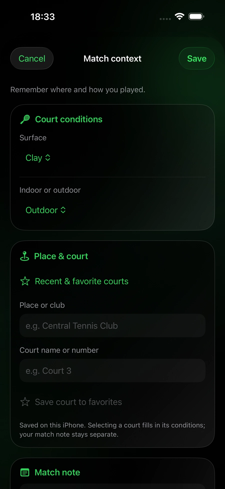

開始使用
設定 Tennis Score Wizard 並開始記錄第一場比賽所需的基本資訊。
即時記分需要安裝 Tennis Score Wizard 的相容 Apple Watch。iPhone Pro 也可新增已進行比賽。健康資料存取為可選，僅用於記錄訓練和可用測量值。
在 Apple Watch 開啟應用，選擇單打或雙打、一盤或三盤兩勝或五盤三勝、盤與局規則、首位發球者。如需訓練記錄可開啟，然後開始比賽。
會。應用會儲存最近一次使用的比賽設定，以便下次更快地準備相同型別的比賽。在比賽開始前，您仍然可以修改任何選項。
可以。記分、比賽統計和歷史記錄都不依賴「健康」App 權限。只有記錄體能訓練以及心率、活動能量等健康資料時才需要授權。
新增和編輯已打過的比賽
在 iPhone 的 Pro 中，把已知結果和 Watch 歷史記錄儲存在一起。
可以。開啟比賽詳情，輕點「編輯比賽」，即可修改日期、時間、時長、規則、各盤比分、搶七分數和結束狀態。Save 會更新現有記錄，不會生成副本；Cancel 會放棄修改。此表單不會更改單打或雙打型別，也不會更換球員。對手關聯和球場資訊請透過各自的入口修改。
會。配對的 Pro 手錶會更新同一場比賽；使用同一 Apple 帳號時，修改也可透過私有 iCloud 同步到 Standalone。請更新應用並等待同步完成。相關統計和基於歷史記錄的亮點會採用修正後的結果。比賽仍會標明為手動新增，不會推算出未記錄的逐分或體能訓練資料。
在比賽標籤頁中點按新增已進行的比賽。選擇單打或雙打，可選填對手姓名，單打也可選擇已儲存的球員。選擇賽制，輸入各盤比分，填寫完畢後儲存。
可以。如果比賽在所選賽制決出勝者之前結束，請選中止，並輸入當時比分，包括尚未打完的一盤。平局也能儲存。只有當比分符合所選規則的獲勝條件時，才選擇完整結束。
先輸入局數。當比分按所選規則代表搶七結果，例如 7–6，會出現雙方搶七分數輸入框。記得就填寫雙方分數，不記得則全部留空。決勝盤的比賽搶十或搶七應直接輸入分數，而非局數，見下方說明。
在三盤兩勝或五盤三勝中，啟用決勝盤的 Match Tie-Break，選擇 7 分或 10 分目標，並在決勝行直接填寫分數，例如 10–8，而不是按局填寫 1–0。如果整場比賽就是一次 Match Tie-Break，請在盤規則中選擇 Match Tie-break。完整結束時必須領先兩分。
選擇中止，輸入啟動搶七時的平局局分，例如 6–6。出現搶七輸入框後，填寫停止時雙方的分數；不記得就全部留空。應用不會猜測缺失分數。
選擇開始與結束，填寫兩個日期和時間，時長會自動計算。如果打過午夜，請將結束日期設為次日。也可選擇結束與時長，按分鐘輸入。不記得時長則留空；填寫時須在 1 分鐘至 24 小時之間。
此表單用於記錄已經進行的比賽，不是安排未來比賽。結束時間不能在未來；開始與結束模式下，開始必須早於結束。
直接點按目標格子，或使用鍵盤上方的上一個、下一個。輸入一位數字後游標不會自動跳走，便於輸入兩位數。點完成、輸入框外部或滾動頁面，都能收起鍵盤。
已知結果、盤數、局數、輸入的搶七結果和可選時長可計入相關歷史和彙總。逐分過程、發球、接發、破發點和訓練測量不會重建。比賽會標為手動新增，沒有資料的卡片會隱藏。
會。手動記錄可同步到配對的 Pro Watch，也可透過同一 Apple 帳號的私有 iCloud 傳到 Standalone。兩款應用都會保留手動標記並隱藏不存在的統計。請更新兩款應用並等待同步完成。
不能。補錄比賽與編輯 Watch 原始記錄是兩回事。現有比賽可修改對手和可選的比賽資訊，不會改變已記錄的比分或統計。


記住球場，也記住比賽
全部為選填。可在手動錄入時填寫，或稍後在 iPhone 比賽詳情中補充。
場地材質、室內或室外、地點或俱樂部、球場名稱或編號，以及僅屬於這場比賽的私人備註。舊的 Apple Watch 比賽也能補充。
不需要。地點和球場名稱手動輸入，此功能不搜尋地圖上的球場，也不記錄 GPS 位置。
可以從最近使用和收藏的球場中選擇。收藏儲存在這臺 iPhone 上，按 Apple 帳號分開。選擇球場會填入地點和條件，但不替換當前比賽的備註。收藏列表本身不透過 iCloud 同步。
球場資訊和比賽備註隨結果，透過配對裝置傳輸和私有 iCloud 同步。原比分和統計不變。新增、檢視與編輯在 iPhone 上進行；Watch 為同步保留這些資訊，但不提供編輯器。
已填寫的球場條件和地點。私人比賽備註與對手交鋒備註不會顯示。分享前請檢視預覽，尤其是不希望公開比賽地點時。
不會。材質、室內外、地點和備註用於描述比賽環境，不影響亮點，也不會生成某種場地或某個球場的專屬紀錄。
比賽亮點與分享
應用提供 26 種事件型別，並不意味著每場都有 26 張卡片。iPhone 詳情會顯示儲存資料支援的所有適用亮點；分享圖片優先展示最值得關注的專案，最多六個。沒有符合條件的亮點時不顯示該區域。
例如逆轉、決勝盤或 Match Tie-Break、膠著的搶七、直落各盤的結果、連勝或連敗、勝場里程碑、個人紀錄，以及發球或接發特點。有些需要逐分統計，有些可由盤比分和歷史記錄證實。
不是。它們描述應用內儲存的歷史。補錄舊結果、刪除比賽或更換對手，可能改變比較結果和交鋒亮點。評估舊比賽時，不會把之後的比賽當作此前歷史。勝場里程碑以符合條件、完整結束的勝利為基礎。
Stats 和對手交鋒可將中止時有明確領先方的比賽計為有勝負的結果。連勝和勝場里程碑亮點只使用完整結束的勝利，因此未打完的比賽不算入該成就。各項計算都使用對應比較所需的已儲存歷史。
沒有。亮點顯示在 Pro 的 iPhone 比賽詳情和分享圖片中。Watch 歷史保留結果及可用統計，不設單獨的亮點區域。
最終比分無法證明每一分的過程。手動比賽只顯示比分或歷史支援的事件，不會編造發球、接發、破發點或訓練資料。
Match Flow 與 Momentum
Pro 在比賽詳情中提供三種 Match Flow 檢視；兩款手錶應用都能在歷史記錄中顯示精簡的 Momentum。
只有儲存的比賽包含有效的逐分記錄時才會顯示。手錶上新記錄的比賽會自動保留這一順序。部分舊比賽可能已經有足夠的資料；其他舊比賽和手動輸入的結果無法根據最終比分補出缺失的分數記錄。沒有可靠資料時，該部分不會顯示。
每根柱形對應一局已記錄的比賽：綠色表示您贏得該局，紅色表示對手贏得該局。柱形越高表示記錄的得分次數越多，並非獲勝優勢越大。旁邊的方框顯示該局結束後的累計局分。搶七會單獨標明。
Scores 列出每局結束後的累計比分及記錄的得分次數。Key Moments 挑選逐分歷史能夠證實的事件，例如漫長的一局、破發或轉折點。Pro 在比賽詳情中提供這些檢視；手錶歷史記錄則顯示精簡的 Momentum。
不需要。像往常一樣記錄比分即可。Match Flow 使用已儲存的得分順序，不會增加場上的操作控制元件或點選次數。
匯出與恢復比賽歷史
Match History Files 可在 iPhone 上的 Pro 中使用。
如需閱讀或分析報告，請選擇 CSV、Excel 或 PDF。如需日後在 Pro 中恢復比賽，請選擇 JSON 或完整備份 ZIP。ZIP 包含 JSON 存檔、比賽與得分的 CSV 檔案、Excel 工作簿、PDF 報告和簡短說明。單獨的報告無法匯入。
在 Pro 中開啟 Match History Files，點選 Export a Copy，選擇格式後儲存或分享檔案。需要恢復時，點選 Import Backup 並選擇 JSON 或 ZIP 備份。匯入缺失比賽之前，請先檢視預覽。
不會。已有比賽的 ID 會被跳過，此前刪除的 ID 仍保持刪除狀態。只會新增符合條件且缺失的比賽。請將備份檔案另存一份到您可自行管理的位置。
JSON 和 ZIP 會保留已儲存的原始比賽資料，包括存在的逐分記錄。舊比賽和手動輸入的比賽可能沒有逐分歷史。匯出不會生成不存在的測量資料。
比賽設定
根據實際比賽選擇正確的比賽形式和規則。
每方一名球員時請選擇單打，每方兩名球員時請選擇雙打。所選形式會隨比賽一起儲存，並在記錄體能訓練時使用。
三盤兩勝中，率先贏得兩盤的一方獲勝。五盤三勝中，率先贏得三盤的一方獲勝。
所選的一盤就是整場比賽。局數目標和搶七仍由盤規則決定。
請選擇與實際比賽相符的規則。傳統盤通常先贏六局，官方 Short Sets 先贏四局，Custom Set 則可以自行設定各項引數。App 會自動應用完整配置。
先贏四局者獲勝。可選擇在 3–3 或 4–4 開始搶七，再選擇領先兩分的 7 分制或 4–4 決勝分。
只改變局規則：平分後下一分決定該局。它可與所有可用盤制組合。
Custom Set 可設定目標局數、獲勝差值、是否及何時進入搶七、目標分數及分差。例如可以設為八局目標。設定摘要彙總全部規則，便於核對。
不會。比賽長度決定所需盤數，盤規則決定每盤如何結束，Standard 或 No‑Ad 處理平分，可選的 Match Tie‑Break 只替代最後的決勝盤。
您可以在設定過程中手動選擇，也可以使用內建的擲硬幣功能隨機決定。
它會生成一個隨機結果，幫助決定首先發球的一方。比賽開始前，您可以確認結果或繼續調整設定。
啟用該選項並授予「健康」App 權限後，比賽開始時會同時啟動一項網球體能訓練。可用的心率、活動能量和時長資料可以記錄並儲存到「健康」App。
比賽記分
記錄每一分，應用會自動處理網球比賽中的比分變化。
使用記分按鈕選擇這一分由您還是對手贏得。選擇後，比分會立即更新。
會。應用會根據所選規則自動處理分、局、盤、平分、佔先和搶七。
使用 Standard Game 時，40–40 後進入平分：一方必須先取得佔先，再贏得下一分才能拿下該局。使用 No‑Ad 時，40–40 後的下一分直接決定該局。
當所選規則要求進行搶七時，應用會從普通網球計分切換為數字搶七比分。
決勝搶七/搶十用於替代最後一盤。三盤兩勝制打成 1–1，或五盤三勝制打成 2–2 時，請在決勝盤開始前開啟選單，選擇 Match Tie‑Break，再選擇 7 分制或 10 分制。必須領先兩分才能獲勝。單打和雙打都可使用；結果會儲存到歷史記錄、比賽詳情、統計和分享卡片中。
盤內搶七通常在 6–6 時決定一盤，盤分記為 7–6。決勝搶七/搶十會替代整盤決勝盤，並以 [10–7] 等形式單獨顯示。
當您發球時，網球圖示會顯示正確的發球側。當對手發球時，應用會從您檢視手錶的視角顯示對手的發球側。
發球方會隨著每局和搶七中的比分程序自動切換。如果顯示與實際比賽不一致，可以在選單中手動修正。
在適當的局數結束後，應用會顯示交換場地提醒。該提醒僅用於提示，並會在繼續記錄下一分後消失。
比賽控制
修正輸入錯誤、管理當前比賽，並安全地停止未完成的比賽。
撤銷會移除最後記錄的一分，並恢復之前的分數、局數、盤數、發球方、發球位置、搶七狀態和相關統計資料。
比賽進行中，可以透過選單修正發球方、檢視歷史記錄、停止當前比賽或準備一場新比賽。
當應用顯示的發球方與實際比賽不一致時使用。該操作只修正當前發球方，不會改變比分。
未完成的比賽可以連同當前比分、比賽時長、已完成的盤、正在進行的盤、得分和可用統計資料一起儲存。在歷史記錄中仍會顯示為“已停止”。如果一方領先，結果還會計入勝負記錄、勝率和連勝或連敗；如果比分相同，則按中立結果處理。
可以。返回設定介面即可開始一場新比賽。上一次的比賽配置也可以再次使用。
請儘快使用撤銷。這樣可以準確恢復到錯誤輸入之前的完整狀態，而不是透過再新增一分來抵消錯誤。
App 只儲存實際記錄的進度，不會為一場空比賽新增虛構的分數、局數、統計或體能訓練資料。
對手與交手記錄
在 Apple Watch 上選擇已儲存的單打對手，自動生成私密交手戰績。
在 iPhone Pro 中開啟“交手記錄”，輸入完整姓名和用於 Watch 顯示的簡稱。Watch 名稱最多 16 個字元，以確保在比賽設定和即時記分中清晰可讀。Apple Watch 上的 Standalone 可以選擇已同步的對手，但不能建立或編輯球員檔案。
在 iPhone 的“交手記錄”中長按球員卡片，選擇“刪除球員”並確認。原先關聯到該球員的比賽會保留在比賽記錄中，但變為未指定狀態，之後可以再指定給其他球員。
設定比賽時選擇單打，開啟“對手”，然後選擇「訪客」或已儲存的球員。訪客比賽會正常儲存，但不會加入交手記錄。雙打比賽不會把整場團隊比賽關聯到某一個對手。
統計已關聯到該球員且結果明確的單打比賽。已完成的比賽，以及停止時一方明確領先的比賽會計入戰績；平分時停止的比賽保持中立。若有實際記錄，還會顯示盤、局、搶七、得分、發球與接發球、破發點、時長、體能訓練摘要和比賽列表。
它會比較最近五場結果明確的交手勝率與所選完整時段的勝率。如果不足五場，就使用已有比賽。切換全部時間、今年或最近 30 天時，比較結果也會變化。
指先輸掉已經結束的第一盤，最後仍贏得比賽。比如“5 場中 2 勝”表示在五場先丟第一盤的比賽中贏了兩場，並不是嘗試次數上限。
當前連續記錄是結果明確的比賽中，最近連續獲勝或連續失利的序列。最長連勝是所選時段內連續獲勝場次最多的一段。
可以。在 iPhone 上開啟已儲存的單打比賽，在“對手”區域輕點“指定”，然後選擇球員。之後可更改或移除關聯，而不會改變比分和統計。更新會傳送到配對 Apple Watch 的 Pro 歷史，並透過私密 iCloud 同步傳到 Standalone。
每位球員都有固定的內部識別符號。建立時還會比較統一格式後的完整姓名和 Watch 名稱。同步使用固定識別符號和刪除記錄，因此其他裝置會更新同一檔案，而不是重新建立。
不會。備註只儲存在交手檔案中，不會出現在分享文字或圖片卡片裡。分享卡片使用當前時間篩選，並固定按以下順序排列：戰績與近期交手、比賽表現、比賽規律與體能資訊。
瞭解比賽統計
瞭解已儲存的統計資料代表什麼，以及它們如何計算。
它表示比賽中記錄的全部得分數量。統計摘要會分別顯示您贏得的分數和對手贏得的分數。
指包含逐分資料的局。中止比賽時可能包括當前尚未結束的一局，因此該數值並非官方局分。
顯示您在發球時面臨和挽救的破發點，以及接發球時獲得的機會和兌現的破發點。搶七中的分數不計入。
會。統計資料根據已記錄的得分自動計算。使用撤銷時，最後一分對統計資料產生的影響也會一併撤銷。
已停止的比賽只包含停止之前實際發生的得分和比賽情況。需要後續比賽程序或正常結束才能計算的資料可能不會顯示。
由舊版本應用儲存的比賽可能不包含後來新增的資料欄位。應用會保留當時實際儲存的資訊，而不會推測缺失的資料。
Pro 的 iPhone 與 Apple Watch 同步
Pro 包含完整的 Apple Watch 記分應用和 iPhone 比賽分析功能。您無需另行購買 Tennis Score Wizard（Standalone）。
在 Apple Watch 上記分，然後在 iPhone 上檢視同步的比賽歷史、結果、統計和體能訓練資料。
即時比賽設定和逐分記分仍在 Watch。iPhone 可補錄結果、編輯資訊、檢視比賽和分享亮點。手動輸入並不是 iPhone 即時記分牌。
iPhone 顯示最新結果與歷史，包括手動比賽、盤與搶七比分、可選資訊和有依據的亮點。Watch 記錄還可包含逐分、發球、接發、破發點、比賽程序和訓練概要。
Pro 有兩條相互獨立的同步路徑。Watch Connectivity 可在配對的 Apple Watch 與 iPhone 之間直接傳輸已儲存的比賽；兩臺裝置都可用時，這通常是最快的本地路徑。CloudKit 則獨立為使用同一 Apple 帳號的 Standalone 和 Pro 提供持久可靠的 iCloud 同步與恢復。兩條路徑無需互相等待；如果同一場比賽透過兩條路徑送達，App 只保留一條最新記錄。
請確認配對的是正確的 Apple Watch，將兩臺裝置放在附近，並分別在 Apple Watch 和 iPhone 上開啟 Tennis Score Wizard。還要確認兩臺裝置登入的是您打算使用的 Apple 帳號，並檢查“歷史記錄”中的 iCloud 狀態。已儲存的比賽在等待同步時仍會受到本地保護，並可在配對裝置連線或 iCloud 可用時同步。
如果體能訓練資料可用，Pro 可以在兩臺裝置上隨已儲存的比賽顯示比賽時長、平均心率、最高心率和活動能量。
在 Pro 中刪除單場比賽或全部歷史後，更改會在 iPhone 與 Apple Watch 之間同步，並在 iCloud 可用時透過 iCloud 同步。刪除全部歷史前，App 會要求確認。
會。Pro 可將更新後的關聯直接傳送到配對的 Apple Watch。使用同一 Apple 帳號時，Standalone 也會透過私密 iCloud 同步收到更新。
透過 iCloud 同步與恢復
無需建立 Tennis Score Wizard 帳號，即可在 Standalone 與 Pro 之間同步已儲存的比賽。
請確保 Apple Watch 以及 Pro 使用的 iPhone 登入同一 Apple 帳號。啟用 iCloud 雲盤，保持網路連線，並等待首次同步完成。iCloud 不可用時仍可繼續記分。
可以。兩個版本使用相同的 iCloud 儲存空間儲存比賽。使用同一 Apple 帳號時，Standalone 中儲存的比賽可以出現在 Pro 中，反之亦然。
開啟“歷史記錄”並檢視 iCloud 行。Synced 表示最近一次同步已成功完成，該行會顯示日期和時間。Syncing 表示正在同步。Waiting 與 Saving 表示本地更改已安全排隊，正等待傳送到 iCloud。Sync paused 與 Retry 表示最近一次嘗試未能完成；輕點該行即可重試。
每個 Apple 帳號都有各自獨立的私有 CloudKit 比賽歷史，不同帳號的記錄不會混合或合併。App 檢測到帳號變更後，會顯示當前 Apple 帳號對應的本地和 iCloud 歷史；切換回上一個帳號後，同步完成即可再次看到該帳號的歷史。在從這臺裝置移除上一個帳號的本地快取前，仍在等待同步的比賽會保留在與該帳號繫結的加密恢復副本中。這些比賽不會上傳到新帳號；更換帳號也不會刪除任一帳號的 iCloud 資料庫中已儲存的記錄。
如果在移除 App 前比賽已成功同步，就可以恢復。請先確認“歷史記錄”顯示 Synced。重新安裝後，使用同一 Apple 帳號，保持 iCloud 雲盤開啟，開啟 App 並等待比賽下載。
不會。僅移除 App 不會刪除已經同步到 iCloud 的比賽記錄。重新安裝後可以再次下載。在 Tennis Score Wizard 中刪除比賽後，iCloud 可用時也會同步刪除操作。
不能。CloudKit 會將同步記錄儲存在您的 Apple 帳號的私有資料庫中。預設情況下，Apple 只允許該使用者存取私有資料庫。
「健康」App 與體能訓練
記錄網球體能訓練，並瞭解比賽結束後顯示的健康資料。
在比賽設定中啟用“記錄體能訓練”，並授予「健康」App 權限。體能訓練會隨比賽開始，並在比賽完成或停止時結束。
在體能訓練記錄期間，如果「健康」App 已授權並且 Apple Watch 提供了心率測量值，App 會顯示當前心率。
平均心率根據體能訓練期間可用的心率測量值計算。最高心率是該次體能訓練中記錄到的最高值。
活動能量是體能訓練期間因身體活動而消耗的估算能量。Apple Watch 和「健康」App 會根據可用的健康和運動資料進行計算。
成功結束後，體能訓練會儲存到「健康」App。根據權限和同步狀態，它也可能顯示在 Apple 的“健身”應用中。
部分資料會在體能訓練結束後由「健康」App 完成最終計算。請等待一段時間完成處理和同步，然後重新開啟已完成的比賽。
可能的原因包括未授予權限、感測器收集的測量值不足、未啟用體能訓練記錄，或「健康」App 尚未完成資料處理。
會。比賽比分和歷史記錄與「健康」App 分開儲存。「健康」App 權限或體能訓練資料出現問題不會阻止比賽記錄儲存。
比賽歷史
按年、月以及單打或雙打篩選比賽歷史。較早的記錄隨瀏覽逐步載入，全部已儲存的歷史仍然可用。
在 History 中輕點 Period，選擇年份，再選擇月份或 Entire year（全年）。列表只顯示有比賽記錄的年份和月份。All dates 清除時間範圍篩選，All、1v1 和 2v2 用於篩選比賽型別。Pro 和 Standalone 均支援。
不是。最初顯示符合條件的 50 條記錄，之後在瀏覽時每次再載入 50 條較早的記錄。也可以輕點 Load older matches。彙總涵蓋所有符合條件的記錄，而不只是第一頁。時間範圍選單基於全部已儲存的歷史，舊比賽不會被刪除。
Win 表示您按盤數贏下了已完成比賽。Loss 表示對手按盤數贏下了已完成比賽。
表示比賽在正常結束之前被儲存。停止時已經記錄的真實比賽狀態會被保留。如果一方領先，結果會計入勝負記錄、勝率和連勝或連敗；如果比分相同，則按中立結果處理。
S1 至 S5 表示第一至第五盤。結束或中止的結果可顯示一至五個常規盤。例如 S1 6–3 表示第一盤以六局比三局結束。
TB 表示該盤中的搶七比分。例如，“7–6 · TB 7–3”表示該盤以 7–6 結束，搶七比分為 7–3。
簡略行的小括號數字為搶七失利方得分。例如 7–6(6) 表示搶七以 8–6 獲勝。分盤表在有記錄時可顯示雙方分數。
先比較已完成的盤數；相同時比較當前未完成盤的局數，再比較已記錄的搶七或局內分數。不會累計之前各盤的局數來判斷領先。盤間中止且雙方獲勝盤數相等時視為平局。若有明確領先方，統計中計為勝負，但保留中止標記。
如果當前一盤已經開始，其進行中的比分會與比賽一起儲存，例如“S3 0–1”。
比賽記錄可包含賽制、結果、盤與搶七比分、時間和對手關聯。手動錄入會明確標註。iPhone 可新增球場條件、地點和私人備註。逐分與訓練統計只有實際記錄時才提供，不從手動比分推算。
可以。在比賽歷史中選擇刪除操作並確認。之後該歷史記錄會從應用中移除。
搶七分數位於局分旁。局數為兩位數時單元格可加寬，讓數字分開且清晰。決勝 Match Tie-Break 單獨放在方括號中，例如 [10–7]。分享文字也包含完整結果。
盤內搶七使用緊湊上標，不會改變主要盤分的字號和間距。決勝 Match Tie‑Break 會單獨顯示在方括號中，例如 [10–7]。
月度和年度總結
兩款 Apple Watch 應用都可回顧已儲存的比賽。Pro 還可在 iPhone 上檢視更詳細的總結。
在 Apple Watch 上開啟歷史記錄，輕點 Period，選擇有已儲存比賽的年份或月份，再開啟 Year in Tennis 或 Month in Tennis。在 Pro 的 iPhone 應用中，開啟日曆，然後進入所選月份或年份的總結。
每個柱形統計對應一週或一個月內儲存的比賽。綠色表示獲勝，紅色表示失利，黃色表示中途結束的比賽。柱形上方的數字是比賽總場數。概覽會將已完成比賽的勝負與中途結束的比賽分開統計。
每週的起始日期依照裝置的日曆設定。一個月可能跨越五個或六個日曆周。所選月份內有兩個完整的週可供比較時，才會顯示周度對比。
如果有可比記錄，總結會對比本月與上月或今年與去年的比賽場數和勝率。對於尚未結束的月份或年份，兩個時段都比較到同一進度。勝率只統計已完成比賽的勝負，不包括平局和中途結束的比賽。
兩款 Apple Watch 應用均可顯示所選時段的成就。在 Pro 的 iPhone 應用中，輕點成就可開啟對應比賽，也可透過“分享”生成月度或年度總結卡片。
自願贊助開發
一次性支援有助於後續開發，但不會解鎖功能，也不會改變 App 的使用權限。
不會。透過 Apple 讚賞或使用加密貨幣支援完全自願。無論是否支援，您購買的產品所包含的功能都保持可用。
在“資訊 → 支援開發”中選擇一次性金額，並在 Apple 購買頁面確認。Apple 會使用與您的 App Store 帳號關聯的付款方式處理。
請在錢包中核對幣種、網路和完整收款地址。區塊鏈轉賬通常無法撤銷。Tennis Score Wizard 不會把比賽、交手記錄、體能訓練或健康資料附加到交易中。
Apple Watch 錶盤複雜功能
從支援的錶盤快速開啟 Tennis Score Wizard。
它可以作為應用快捷入口。輕點後會在 Apple Watch 上開啟 Tennis Score Wizard。
Tennis Score Wizard 支援相容 Apple Watch 錶盤上的圓形和角落複雜功能位置。
在 Apple Watch 或 iPhone 的 Watch 應用中編輯相容表盤，選擇一個受支援的位置，然後從可用複雜功能中選擇 Tennis Score Wizard。
請確認應用已安裝到 Apple Watch，並且所選錶盤位置支援相應的複雜功能系列。不同錶盤提供的位置可能不同。
每個錶盤位置的形狀和可用空間由 Apple Watch 決定。Tennis Score Wizard 會自動適配圓形或角落位置。
故障排除
當記分、體能訓練資料或錶盤快捷入口未按預期工作時，可檢查以下專案。
請確認已啟用體能訓練記錄、「健康」App 已授權，並且手錶正確佩戴在手腕上。只有 Apple Watch 提供測量值後，心率才會顯示。
請等待資料處理完成，檢查 Health 權限並確認比賽設定中已啟用體能訓練記錄。同時確保比賽已正常完成或停止。
請等待「健康」App 完成體能訓練資料處理，然後重新開啟已完成的比賽。如果原始資料不足，相應數值可能仍然不可用。
開啟選單並使用“切換髮球方”。該操作會修正發球方，但不會改變比分。
請使用撤銷。應用會恢復到最後一分輸入之前的狀態，包括比分、發球方、搶七狀態和相關統計資料。
請嘗試圓形或角落複雜功能位置。並非每個錶盤上的每個位置都支援同一種複雜功能。
請先開啟“歷史記錄”，確認 iCloud 行顯示 Synced。重新安裝後，使用同一 Apple 帳號並啟用 iCloud 雲盤，然後等待恢復完成。未完成 iCloud 同步的比賽只會保留在原裝置上。
Waiting 與 Saving 表示本地更改正在排隊，可在 iCloud 可用後上傳。如果顯示 Sync paused 與 Retry，請確認裝置已登入您打算使用的 Apple 帳號、iCloud 雲盤已啟用、網路可用且 iCloud 儲存空間未滿，然後輕點狀態行。iCloud 不可用不會刪除本地比賽。